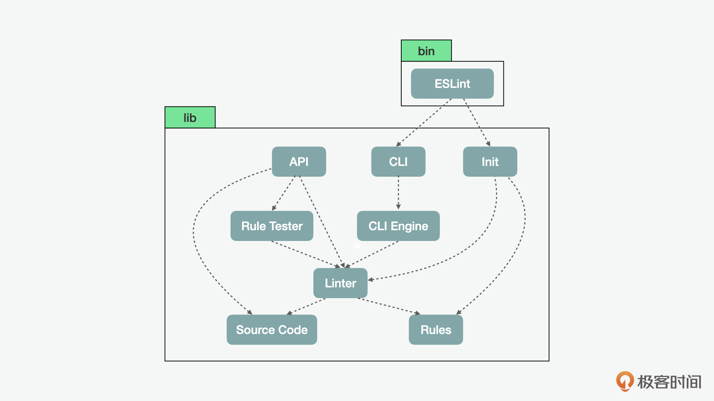
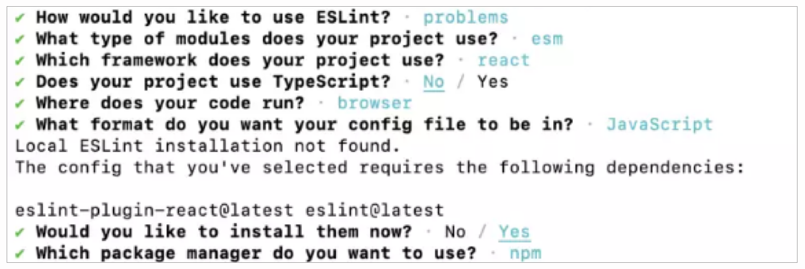
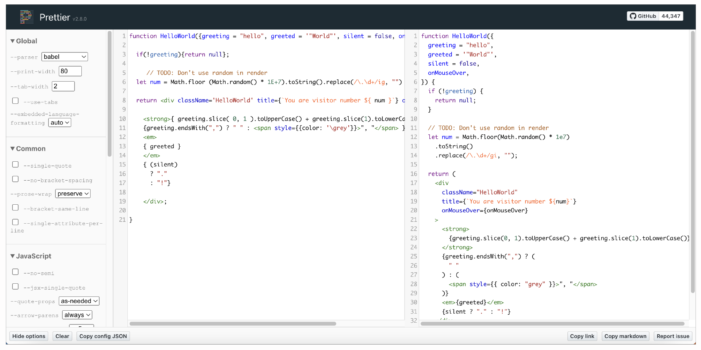

- 00 开篇词 JavaScript的进阶之路.md.html
- 01 函数式vs.面向对象：响应未知和不确定.md.html
- 02 如何通过闭包对象管理程序中状态的变化？.md.html
- 03 如何通过部分应用和柯里化让函数具象化？.md.html
- 04 如何通过组合、管道和reducer让函数抽象化？.md.html
- 05 map、reduce和monad如何围绕值进行操作？.md.html
- 06 如何通过模块化、异步和观察做到动态加载？.md.html
- 07 深入理解对象的私有和静态属性.md.html
- 08 深入理解继承、Delegation和组合.md.html
- 09 面向对象：通过词法作用域和调用点理解this绑定.md.html
- 10 JS有哪8种数据类型，你需要注意什么？.md.html
- 11 通过JS引擎的堆栈了解闭包原理.md.html
- 12 JS语义分析该用迭代还是递归？.md.html
- 13 JS引擎如何实现数组的稳定排序？.md.html
- 14 通过SparkPlug深入了解调用栈.md.html
- 15 如何通过哈希查找JS对象内存地址？.md.html
- 16 为什么环形队列适合做Node数据流缓存？.md.html
- 17 如何通过链表做LRU_LFU缓存？.md.html
- 18 TurboFan如何用图做JS编译优化？.md.html
- 19 通过树和图看如何在无序中找到路径和秩序.md.html
- 20 算法思想：JS中分治、贪心、回溯和动态规划.md.html
- 21 创建型：为什么说Redux可以替代单例状态管理.md.html
- 22 结构型：Vue.js如何通过代理实现响应式编程.md.html
- 23 结构型：通过jQuery看结构型模式.md.html
- 24 行为型：通过观察者、迭代器模式看JS异步回调.md.html
- 25 行为型：模版、策略和状态模式有什么区别？.md.html
- 26 特殊型：前端有哪些处理加载和渲染的特殊“模式”？.md.html
- 27 性能：如何理解JavaScript中的并行、并发？（上）.md.html
- 28 性能：如何理解JavaScript中的并行、并发？（下）.md.html
- 29 性能：通过Orinoco、Jank Busters看垃圾回收.md.html
- 30 网络：从HTTP_1到HTTP_3，你都需要了解什么？.md.html
- 31 安全：JS代码和程序都需要注意哪些安全问题？.md.html
- 32 测试（一）：开发到重构中的测试.md.html
- 33 测试（二）：功能性测试.md.html
- 34 测试（三）：非功能性测试.md.html
- 35 静态类型检查：ESLint语法规则和代码风格的检查.md.html
- 36 Flow：通过Flow类看JS的类型检查.md.html
- 37 包管理和分发：通过NPM做包的管理和分发.md.html
- 38 编译和打包：通过Webpack、Babel做编译和打包.md.html
- 39 语法扩展：通过JSX来做语法扩展.md.html
- 40 Polyfill：通过Polyfill让浏览器提供原生支持.md.html
- 41 微前端：从MVC贫血模式到DDD充血模式.md.html
- 42 大前端：通过一云多端搭建跨PC_移动的平台应用.md.html
- 43 元编程：通过Proxies和Reflect赋能元编程.md.html
- 结束语 JavaScript的未来之路：源于一个以终为始的初心.md.html
- 捐赠
35 静态类型检查：ESLint语法规则和代码风格的检查
你好，我是石川。
前面几讲中，我们介绍了JS中的测试，其中包括了单元、UI自动化类的功能性测试，还有性能、安全以及辅助工具等非功能性的测试。通常这些测试都是我们产品上线前的软件工程流水线中重要的环节，因为这些测试所发现的问题会直接影响我们的程序能不能正常运行。
但是除此之外，有些问题是潜在的，虽然不会对我们的程序有直接的影响，但是可能会间接产生系统风险。根据墨菲定律，我们知道，会出错的事总会出错。那么除了测试以外，我们怎么解决代码中这种潜在的风险呢？这时，就需要用到 linter 代码检查工具。
今天，我们就通过检查代码质量和风格的工具 ESLint，来看看代码质量检查这项工作。
代码规范工具
在编程中 “lint” 这个术语指的是虽然可以运行，但从某种程度上不是最优的代码。这些代码可能引起潜在问题，如bug、安全隐患，或者可读性问题。linter是一种检测代码中是否含有问题代码的工具。linting 则是在代码上运行linter工具，然后修复代码、去除问题代码，直到 linter 不再报错的整个过程。
lint 并不是 JavaScript 的专有名词。它来源于 C 语言，当 C 语言问世不久的时候，有几个常见的编程错误没有被原始编译器捕捉到，因此一个名为 linter 的辅助工具就诞生了，它可以通过扫描源代码文件来查找问题。随着 C 语言的成熟，该语言的定义得到了加强，消除了风险隐患；同时代码的编译器本身一般也会发出警告，所以之后就不再需要这样额外的代码检查工具了。
前面，我们介绍过，JavaScript 是一个相对灵活轻量的语言，这是它的优点，但同时也是不足。因为它没有像 C 或Java语言一样的严谨，所以特别是对于大型项目来说，这种灵活性也就代表开发者自身成了用好这门语言的第一责任人。而且除了语言定义上缺乏严谨性外，JavaScript本身也没有官方的编译器，所以时至今日，linting 仍然是代码检查中需要单独工具来处理的一项重要工作。
其实在 ESLint 之前，道格拉斯·克劳福德曾经开发了 JSLint，一个早期的 JavaScript 代码质量检查工具。它的工作原理就是对源代码进行扫描，如果发现潜在问题，就返回问题在源码中的大致位置和描述。这些潜在问题不一定是语法错误，JSLint 也会关注一些样式约定以及代码结构问题。如之前所说，它不像单元测试，通过检查不能证明程序可以正常运行。JSLint 更多是提供了单元测试外，另外发现潜在问题的途径。因为 JSLint 规范比 ECMAScript 语言的官方定义更严格，所以可以被看做是 JavaScript 的子集。
在后来的发展中，ESLint 逐渐成为了更加受欢迎的一个 linter 工具。
首先，我们可以简单了解下它的组成。ESLint 最核心的模块是 Linter、CLIEngine 和 RuleTester。
- Linter 是核心中的核心，它没有文件I/O，也不与控制台直接交互。它的主要工作就是根据配置的选项来进行代码验证。
- CLIEngine 的主要作用是找到源代码文件和配置文件，它包含了配置文件、解析器、插件和格式器的加载逻辑。ESLint使用的是Espree的解析器。
- RuleTester 的作用是对每一条检查规则做单元测试，RuleTester 内部包装的是 Mocha，对，你没看错，ESLint 用 Mocha 作为内部的单元测试工具。RuleTester 效仿 Mocha 的接口，可以与 Mocha 的全局测试方法一起使用。当然除了 Mocha 以外，RuleTester 也可以和其它的单元测试工具结合使用。

下面我们再来看看ESLint、API和CLI的关系。ESLint 是通过命令行来执行的文件，实际上它只是一个将命令行作为参数传递给CLI的包装器。CLI 接收到参数后，使用 ESLint 执行命令。API 是 require("esint") 的入口，它暴露的对象包括了 Linter、ESLint、RuleTester 和 Source Code 的公共类。
最后，我们再来看看Source Code 和 Rules。顾名思义，它们分别代表了源代码和代码测试的内置规则。
代码规范检查
以上就是关于代码规范工具的一些介绍，下面，我们就可以具体看看 ESLint 的安装和使用步骤了。首先，通过执行以下命令来安装ESLint。
npm init @eslint/config
在初始化的过程中，ESLint 会问使用的场景、模块化的类型、项目所使用的框架、是否有使用TypeScript、代码运行的环境和 config 文件的格式等等。之后，程序会检查之前有没有 ESLint 的本地安装。如果没有，就会先进行安装。安装前可以选择相关的包管理工具，这里，我使用的是 NPM，除此之外，有些同学也可能选择 YARN。在一系列的选择之后，ESLint就会运行并完成安装。

之后，我们通过下面的命令，便可执行代码检查。
npx eslint yourfile.js
代码规范类型
那么在检查中，通常会有哪些类型的报错呢？这里，我们先了解下代码规范的目的。因为按照测试驱动的设计思想，如果没有相关的测试目的，那么检查和报错也就无从谈起了。总结来说，代码规范通常有这样两个目的：
- 提高代码的质量；
- 统一代码的风格。
我们可以通过下面的示例代码来看两个例子。第一个例子，使用 constructor 来构建函数，同 eval() 类似，会使得字符串的内容可能被执行。所以这个例子不仅是代码质量问题，甚至会有安全隐患。
// bad
const add = new Function('a', 'b', 'return a + b');
// still bad
const subtract = Function('a', 'b', 'return a - b');
在下面的例子中，第一行的对象字面量的表达非常长。虽然代码本身的质量没问题，但是这么长的句子会影响代码的可读性。而第二种写法则更加可读。所以通常 linter 工具会要求一行代码的长度不要超过80个字符。这样，可以提高代码的可读性。
这里，你可能会问，难道写在一行就没有优点吗？其实也不是，如果我们把代码写在一行的话，按说在没有换行的情况下占用的空间会更小，可以压缩文件的大小。但是这个问题通常不是在写代码的时候解决的，而是在程序写完后，可以通过压缩器 JS minifier 来处理。在编写代码的环节，我们始终更重视的问题是我们的代码对于自己和同事是否易读。
// Bad
const foo = { "bar": "This is a bar.", "baz": { "qux": "This is a qux" }, "difficult": "to read" };
// Good
const foo = {
"bar": "This is a bar.",
"baz": { "qux": "This is a qux" },
"difficult": "to read"
};
从上面的例子中，我们可以看到 linter 是一种可以让我们的代码变得更好的方式。但是类似这样的问题，在JavaScript 中有很多。同时在有些时候，大家对“好”的定义可能还不一样。那么遇到这么庞大的规则数量，以及大家对代码风格的不同定义，应该怎么处理呢？
我们先从规则数量说起。这里，ESLint 已经帮助我们整理了一些常用的规则，我们可以将 ESLint 内置的规则作为一个基准，在上面做相关的定制。在内置的规则中，分为问题、建议、布局和格式。问题和建议的目的主要是提高代码质量，布局和格式的目的主要是统一代码编写风格。
其次我们看看不同的个人或团队都有自己的风格，该怎么处理？遇到这样的问题，开发者可以通过自定义规则来满足不同的需求，而且这些规则也是可以共享的。比如，Airbnb 就总结了一套自己的 JavaScript 代码编写规范，并且将相关的 ESLint 配置开源了出来，可以供其他开发者使用。那如果我们自己一个人写代码，还有没有必要使用 linter 呢？答案是即使在维护者只有自己的情况下，我们也应该让代码形成自己的前后一致的风格。
通过插件的方式，ESLint 也可以作为插件和 Angular、React 等三方库结合使用。
延伸：代码规范化工具
我们在用到 ESLint 时，核心的诉求还是写出更高质量的代码，其次才是代码的美化。一些项目使用 linter 的原因之一是为了实施一致的编码风格，这样当一个开发团队在共享同一个产品或项目代码库的时候，他们就可以使用兼容的代码约定。这包括代码缩进规则，但也可以包括应该用单引号还是双引号，以及 for 关键字和其后的右括号之间是否应该有空格之类的规则。
除了 linter 这种代码检查类的工具外，还有一种代码规范化的工具，其中一个例子就是 Prettier。它的工作原理也是对代码进行解析和格式化。例如我们编写了下面的函数，从功能层面讲，它是有效的，但格式不符合常规。
function HelloWorld({greeting = "hello", greeted = '"World"', silent = false, onMouseOver,}) {
}
在此代码上运行 Prettier 可以修复缩进，添加缺少的换行，让代码更加可读。
function HelloWorld({
greeting = "hello",
greeted = '"World"',
silent = false,
onMouseOver,
}) {}
在使用 Prettier 的时候，如果使用 --write 选项调用，会就地格式化指定的文件，而不是复制后格式化。如果你是用 Git 来管理源代码的话，则可以在代码提交的 hook 中使用 --write 选项来调用 Prettier，它可以让我们在代码提交前自动格式化代码。如果将代码编辑器配置为在每次保存文件时自动运行，则会更加方便。

Prettier 是可配置的，你可以选择代码行的长度限制、缩进量，是否应使用分号，字符串是应该通过单引号还是双引号包裹。虽然它只有几个选项，但总的来说，Prettier 的默认选项非常合理，不需要特别多的改动就可以达到想要的效果。同时，Prettier 也可以通过 eslint-config-prettier 和前面我们说到的 ESLint 结合使用。
总结
今天的一讲，我们看到了 JavaScript 在给我们提供了编写代码的灵活性的同时，也有着很多潜在的问题，而 linter 作为代码检查工具，可以帮助我们将代码出现质量问题的风险降到最低。同时，我们也可以通过类似 Prettier 这样的代码规范化工具，让我们的代码无论是对自己而言，还是对其他开发者来说，都更加的清晰易读。
最近，有个很流行的说法是“悲观的人总是正确，乐观的人总是成功”。所以有人可能会觉得墨菲定律过于悲观，但是在程序足够复杂、用户量足够多的情况下，真的是会出错的事总会出错。所以我认为要开发一个成功的应用，开发者应该是一个结合了悲观和乐观主义的人，悲观让我们守住程序稳定运行的基础，乐观让我们不断去突破、创新和优化，这两者之间的空间才决定了我们程序的发展。
思考题
前面我们说过 ESLint 用到的解析器是 Espree，它是基于JQuery 的Esprima 改进的。那么你知不知道它为什么没有沿用Esprima，而是自行创建了一个新的解析器呢？
欢迎在留言区分享你的看法、交流学习心得或者提出问题，如果觉得有收获，也欢迎你把今天的内容分享给更多的朋友。我们下节课再见！
© 2019 - 2023 Liangliang Lee. Powered by gin and hexo-theme-book.